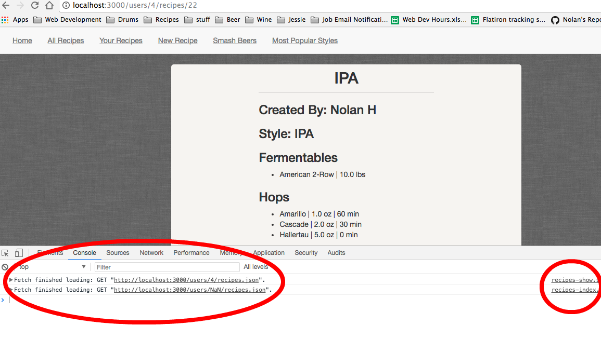
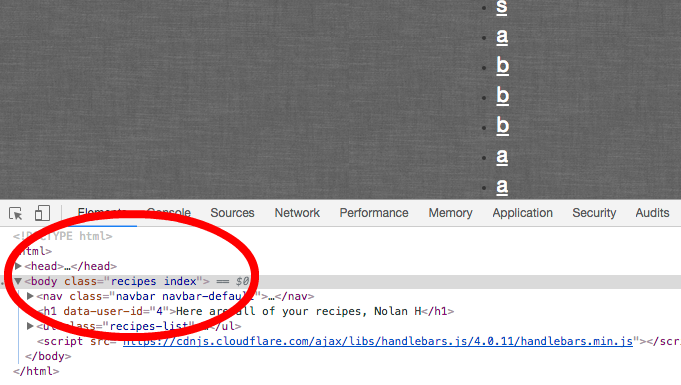
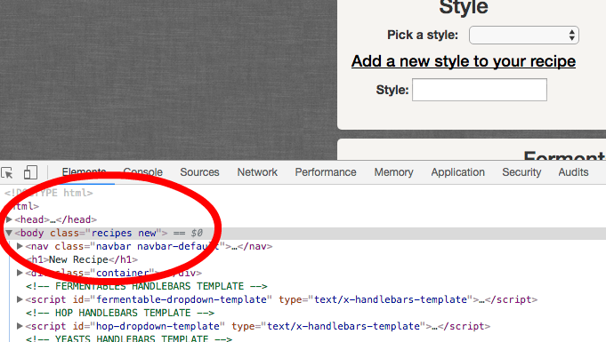
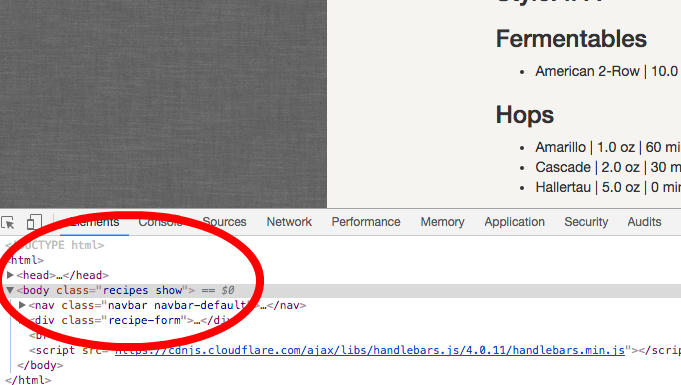
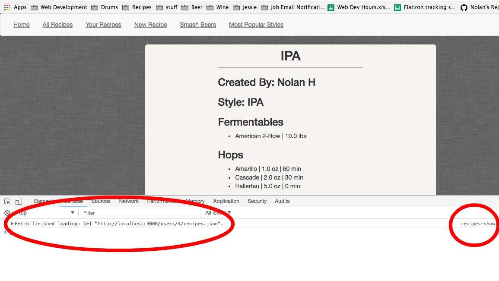

Beer Recipe App with JavaScript
Posted by Nolan Hughes on June 6th, 2018
So the latest project I’ve completed is actually an extension of my previous Rails project. It incorporates all of the goodness that is JavaScript into my recipe app for documenting homebrewed beer recipes. Since I feel like I added about a thousand new features, I’m going to focus on only one feature/topic in this post so that I’m able to go deeper in explaining how it works and not just give another overview of the app. The topic I’ll be covering today is page specific JavaScript!
While this topic might not sound super intriguing, I can assure you that it of the utmost importance and the way I implemented it in my application is actually pretty cool!
Problem
My reasoning behind needing page specific JavaScript was a simple one. I have multiple fetch requests written in my code and I don’t want certain ones to happen that aren’t applicable to the page that is being rendered. Without implementing some form of page specific JavaScript, as I will detail below, I’ll get all of the fetch requests being fired when in reality I might only need one.
Here is a picture of my DevTools console in Chrome showing what happens when page specific JavaScript isn’t implemented.
As you can see there are two requests happening, one from recipes-index.js and one from recipes-show.js. I’m currently on my show page so the request on the index page is completely unnecessary. Furthermore, if you look at the second GET request you will see that the url isn’t even valid, "http://localhost:3000/users/NaN/recipes.json". This is occurring because my data on the index and show page are completely different and the variables that determine that url can’t be set in the same way on both pages.
Now that we can see the potential pitfalls of not setting up page specific JavaScript lets get into the solution.
Solution
The first thing to do is to dynamically set the class of your body tag in your layout based on the controller name and action name.
<body class="<%= controller_name %> <%= action_name %>">
...
</body >
Isn’t that awesome! Rails already has preset variables called controller_name and action_name that you simply have to put in erb tags.
Index
New
Show
The next step is using the jquery-readyselector plugin. This is what does the magic of reading what the current class is, set by the above variables in your body tag, and then firing only the JavaScript you need.
Add this javavascript code to a new file: app/assets/javascripts/jquery-readyselector.js
Then include the new plugin in the application.js manifest file:
//= require jquery
//= require jquery_ujs
//= require jquery-readyselector
//= require tree .
Now you just need to put the page specific JavaScript code in its isolated asset file and scope it to the page you want.
$(".recipes.show").ready(function() {
…
}
$(".recipes.index").ready(function() {
…
}
Now, for example, if you load up the recipe show page, the code that is in recipes-index.js won’t run!
How cool is that!
Conclusion
Hopefully this is able to help someone out who is looking for a good way to do page specific JavaScript and give a little more insight into my homebrewed beer recipe app using Rails and JavaScript.
©2017 Nolan Hughes